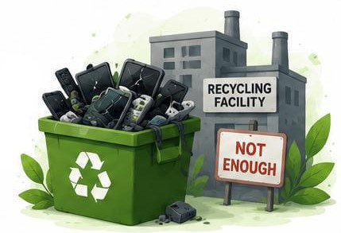
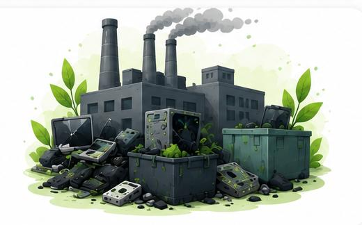
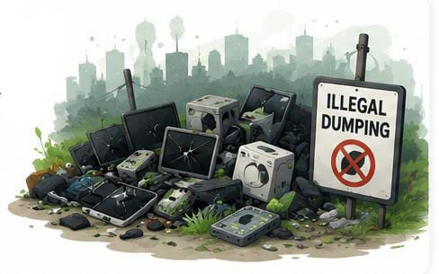

Rapid Technological Advancement
Technology is changing very fast. New devices with better features are introduced frequently,making older devices outdated. As a result, people replace their electronics more often, leading to increased e-waste.
E-waste, or electronic waste, is primarily caused by rapid technological advancements, shortened product lifespans, and high consumer demand for new devices.Frequent upgrades, coupled with lower repairability and cheaper manufacturing costs, encourage disposal of older electronics.Improper disposal, weak recycling infrastucture, and illegal trade further accelerate this growing problem.Understanding the causes of e-waste helps us take better steps to reduce it and manage it properly.
Technology is changing very fast. New devices with better features are introduced frequently,making older devices outdated. As a result, people replace their electronics more often, leading to increased e-waste.
Many electronic products are designed with a limited lifespan. Devices may stop working after a few years or become slow and inefficient, forcing users to replace them instead of repairing them.
People like to use the latest gadgets such as smartphones, laptops, and other devices. Even if old devices are working, they are often replaced to keep up with new trends and features.
Lack of awareness about proper disposal and recycling methods leads to careless handling of e-waste. Many people throw electronic devices in regular garbage instead of recycling them.
New electronic products are becoming more affordable, which encourages people to buy new items instead of repairing old ones. This increases the amount of discarded electronics.
In many areas, proper e-waste collection and recycling systems are not available. Due to this, people do not have easy options to dispose of their electronic waste safely.

Offices, industries, and businesses generate large amounts of e-waste by replacing computers, servers, and other equipment regularly to maintain efficiency and productivity.

In some regions, weak environmental laws and illegal dumping practices contribute to the increase in e-waste. Electronic waste is sometimes disposed of without following safety guidelines.

E-waste is mainly caused by rapid technological growth, consumer habits, and lack of proper disposal systems. By understanding these causes, we can take steps like reducing unnecessary purchases, repairing devices, and supporting recycling to minimize e-waste.